NestDAQ データフォーマットと
デバイス間の構造変化
FEE → Sampler → STFBuilder → TimeFrameBuilder → LogicFilter → TimeFrameSlicerByLogicTiming → FilterTimeFrameBySomething → FileSink。各段階のデータを、既存のKeynote図と同じ色分けの入れ子図で示す。図中の並びは上から下がデータ順。箱の面積はbyte数に比例しない。太字は前段から追加・変更された要素を示す。
対象と読み方
この資料はnestdaq-user-implのローカルスナップショットをもとに、v1ヘッダとV3 TDCを中心に整理したものです。対象コードの内容は行番号付きの参照ソース、SHA-256はソースmanifestに記録しています。NestDAQ全運用・全世代を一律に規定するものではありません。
緑：TF、橙：STF、灰青：HBF、濃灰：DAQ word/HBD、青緑：Filter/Trigger、濃い緑：同期したheartbeat group、ウォームグレー：FileSink。S＝TFのソース数、H＝1ソースのSTFに含むHBF数、nj＝HBF jのtrigger数。概念上の枠の見出しは左揃え、実際に記録されるHeader・DAQ words・HBD・TrgTimeは中央揃え。DAQ wordsの下にHBDを別の箱で示す。代表例では複数の要素を描き、「× number of …」は図示分を含む総繰り返し数を表す。
1. デバイスを通るデータ構造
max-hbfが決めるパッキングの単位
Heartbeat groupは、時刻同期された同じHeartbeatを共通の基準とする、複数ソース（FEM）のDAQ wordのまとまりを表す。各ソースの同じheartbeat区間を対応付け、そのHBD情報をMETA、同じ区間内のtrigger窓で切り出したDAQ wordをSLICEとしてまとめる。単に受信順が近いデータを束ねたものではない。
STFBuilder --max-hbf H → 各ソースのSTFにH個のHBF → 元のTF区間にH個のheartbeat位置 → SlicerがH個のMETAレコードを生成。各METAに、そのHBFで見つかったtrigger数だけSLICEレコードが続く。
| 段階 | 1つの元TF区間に対応する構造 |
|---|---|
| STFBuilder | 各FEM：STF Header + HBF × H。H = max-hbf |
| TimeFrameBuilder | TF Header + STF × ソース数。各STFは同じH個のheartbeat位置を持つ |
| Slicer | [METAj + SLICE × nj] × H個のheartbeat group |
| 後段Filter | [METAj + 採用SLICE × kj] × H。0 ≤ kj ≤ nj |
例：max-hbf=3、各HBFのtrigger数が2、0、1なら、出力順は [META₀, SLICE₀,₀, SLICE₀,₁] [META₁] [META₂, SLICE₂,₀]。METAは3個、SLICEの合計は3個。triggerが0個のHBFにもMETAは残る。
Slicer以後の図では、これらを共通のTimeFrame（元の入力TF区間）の外枠で囲み、その中へHBFごとのまとまりを入れる。外枠とheartbeat groupは説明用の概念で、追加のHeaderやlengthを持つ保存レコードではない。実際のTF Header(type=META/SLICE)は各レコードの先頭にあり、METAとSLICEはbyte列上で順に並ぶ。
上の個数関係は各ソースのHBFが揃う通常の入力を想定する。max-hbfの既定値は1、1未満の指定は1へ補正される（パラメータ読出し、既定値）。Slicerはmax-hbfのオプション値を直接読むのではなく、入力中の実HBF数に沿って反復する（実HBF数）。
1.1 FEE
FEE出力の連続word列。HBDを含み、ソフトウェアのHBF Headerはまだない。
図のDAQ wordを1 wordずつ描き、複数ヒットの区間と0ヒットの区間を並べた。半透明・破線のDAQ wordは任意／不在を示す説明用の印であり、その位置に空のwordが記録される意味ではない。0ヒットでもHBD1/HBD2は区間の末尾に現れる。
FEE（Front-End Electronics）がヒットのTDC・TOT・CH番号などをDAQ wordとして出力し、heartbeat区間の末尾にHBD1/HBD2を挿入する。図では通常のhitとHBDを示す。実際にはthrottlingやspillなどの制御wordもあり、任意の64 bit wordをhitとして読むことはできない。
元のメモにある周期は524.288 µs。HBDの周期はハードウェア・firmware側の仕様として扱い、今回のソフトウェアコードだけから周期設定を確定してはいない。時刻を説明する際は「HBDに対応するheartbeat区間内の相対時刻」と、STFのUNIX時刻を分ける。
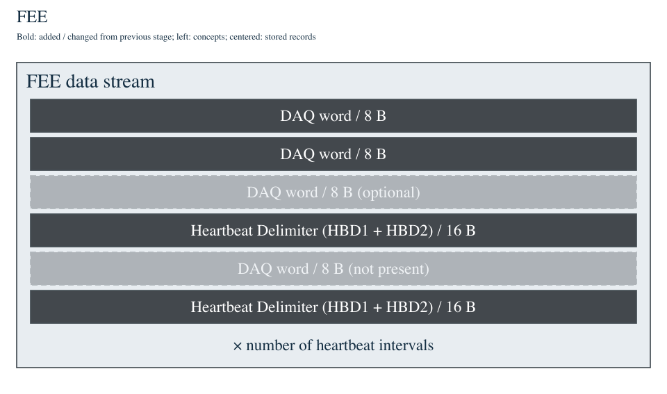
1.2 Sampler
コードでは受信したword列をFairMQ messageへ入れて送信。図2のHBFラップは実装上STFBuilderで行う。FEMInfoは別の初期化メッセージ。
実機用の AmQStrTdcSampler は、受信バッファをそのままサイズ付きのFairMQ messageに載せて送る（受信データの送信処理）。受信chunkの境界はHBD境界と一致するとは限らない。後段のSTFBuilderは残りのwordを保持して次の受信と結合する。
初期化時には別途24 byteのFEMInfoを送れる（SendFEMInfo）。magicは 0x4f464e492d4d4546、LE文字列は "FEM-INFO"。送信処理ではoffset 8にFEMType、12にFEMIdを配置し、16〜23はreserved。C++構造体宣言のFEMId/FEMTypeの順序とは違うため、受信wire配置は送信処理で確認する。
参考の2.pngはHBF Header付きの姿を示す。今回の実装ではそのHeaderを付けるのはSTFBuilderなので、この段階の図はコードに合わせて受信word列とした。HBFという論理区間と、HBF Headerを付けた出力オブジェクトを区別する。
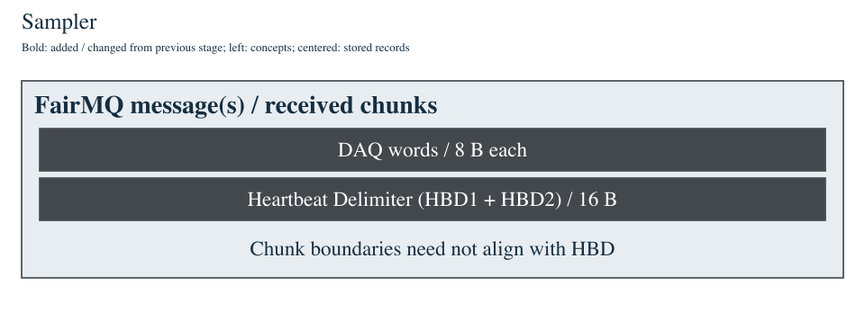
1.3 STFBuilder
STFBuilderのmax-hbfで、STFあたりにまとめるHBF数を指定する。通常の揃った入力ではH = max-hbf。
HBDを認識し、受信chunkをまたぐデータも集めて、HBF Header 16 byteを追加する（FillData）。末尾のHBDもpayloadとして残る。HBFの length はHeaderとpayloadの合計。
max-hbfで指定したHBF数に達するとSTF Header 48 byteを先頭に置く。ソースのFEM種別・ID、timeFrameId、タイムスタンプを設定する（FinalizeSTF）。STFの length はHeaderを含む全メッセージ長の合計、numMessages はSTF Headerを除くpayloadメッセージ数。この経路では各payloadがHBFなので、ここではHBF数に対応する。
FairMQ multipartの概形は [STF Header] [HBF 0] [HBF 1] …。HBF HeaderとDAQ word/HBDは同じpartに格納される。
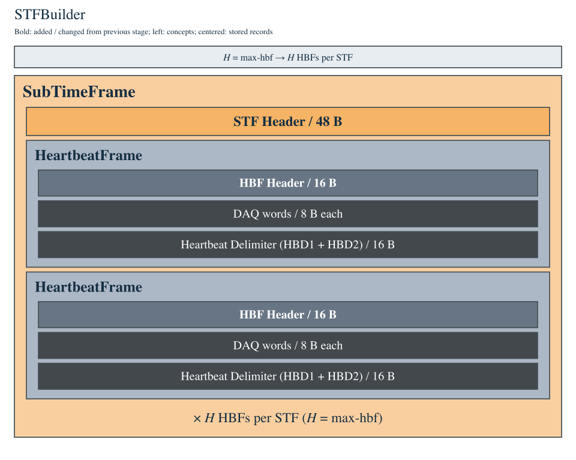
1.4 TimeFrameBuilder
同じtimeFrameIdのSTFをソース間で集約。TF Headerの後に各ソースのSTFが並ぶ。
各FEMからのSTFをtimeFrameIdで対応付け、必要なソースが揃ったTFを構築する。単に異なる時刻のSTFを足し合わせるのではなく、同じIDに属するソースの集合をまとめる。ソース数Sは通常の構成では読み出しFEM数に対応するが、実際には設定と参加ソースの集合で決まる。
出力は [TF Header] [source 0のSTF Header] [そのHBF列] [source 1のSTF Header] [そのHBF列] …。Headerは24 byteで、numSource、timeFrameId、全長を設定する（TFの生成処理）。既存STFのメッセージを出力multipartへ移すため、DAQ wordのbit配置はここでは変わらない。
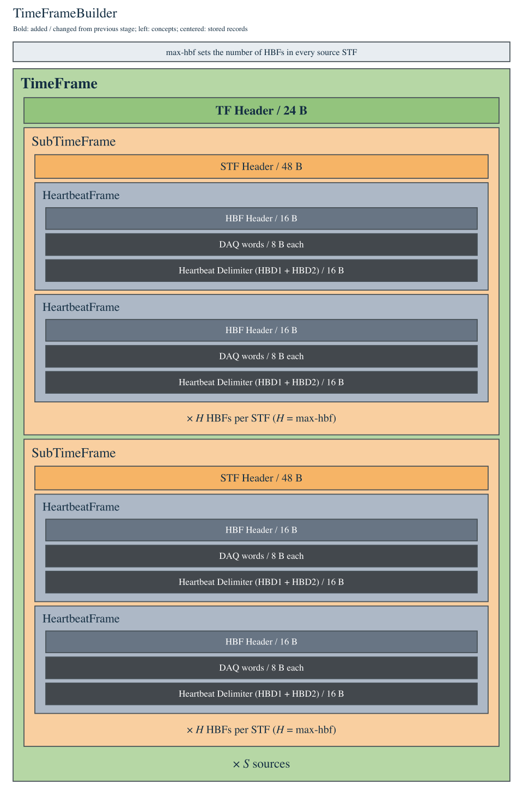
1.5 LogicFilter
単一のFilter HeaderとHBF別のTrigger TimeブロックをTF HeaderとSTF列の間へ挿入。
各HBF内のヒットをソース間で照合し、設定した論理条件の成立時刻を求める。TF Headerの直後に、単一のFilter Headerと、HBFごとの [Trigger Time Header][TrgTime列] を追加する。その後にSTF列が続く（出力の組み立て、Filter情報の生成）。参考5.pngにはFilter Headerが複数描かれているが、この実装経路では1個。
Trigger Time Headerは16 byte、TrgTimeは1個8 byte。numTrigs = Σ n_j、Filter::numMessages = 1 + H。各HBFのtriggerが0個でも、そのHBFに対応するTrigger Time Headerを持ち得る。TrgTimeは uint32_t time と uint32_t type の組で、LogicFilterはtypeに 0xaa000000 を書く。
data suppressionを有効にした経路では、送らないHBFのDAQ wordを落とし、Headerと末尾HBD2 wordを持つblank HBFに置き換える場合がある（BlankHBF）。図はtrigger情報の追加が見える代表構造。DAQ wordが常に全量保存されるとは限らない。
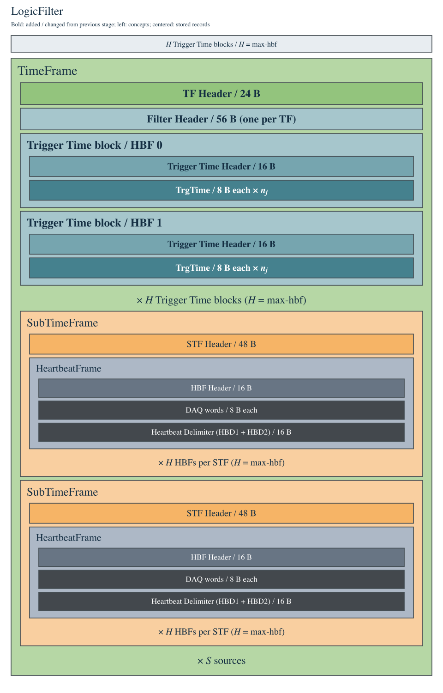
1.6 TimeFrameSlicerByLogicTiming
HBF jごとにMETA TFを1個、そのHBFの各triggerにつきSLICE TFを1個生成。METAにHBDとtrigger情報、SLICEに窓内DAQ wordとHBDを収める。
入力TFのHBF番号jに注目し、[META TF_j] [SLICE TF_j,0] … [SLICE TF_j,n_j−1] を作る。これを各HBFについて繰り返す。入力1 TFから、基本形では H個のMETA TFとΣn_j個のSLICE TF が生まれる（HBFごとの反復）。実装のfNumHBFは最後にパースしたSTFのHBF数から決まる。欠損・不揃い入力は別途確認が必要。
META：TF HeaderのtypeをMETAにし、Filter Header・HBF jのTrigger Time HeaderとTrgTime列、各ソースのSTF Header・HBF Header・HBDを入れる。通常のデータSTFではDAQ wordをコピーせず、末尾のHBD2 wordだけを残す。入力STFが既にMETAの場合はそのHBFデータ全体をコピーする例外がある（METAの作成）。
SLICE：triggerごとにTF HeaderのtypeをSLICEにし、各データソースから trig + offsetBegin ≤ tdc4n ≤ trig + offsetEnd のDAQ wordを取り出す。HBFの末尾HBD2 wordもコピーする。META型の入力STFはSLICEには含めない。Trigger情報そのものはSLICE内には入らず、直前のMETA側に置かれる（triggerごとのSLICE作成）。
各HBFの META + SLICE列 は1個の連続バッファ／FairMQ partにシリアライズされる。図では元の入力区間をTimeFrameの共通外枠で囲む。その中のMETA/SLICEは順に並ぶ独立レコードであり、外枠の分だけ追加Headerが付くわけではない。窓が重なるtriggerについては読み出し位置を戻すため、同じhitが複数SLICEに含まれることもある。
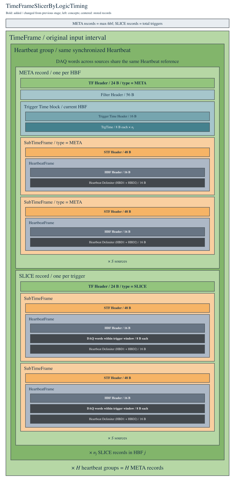
1.7 FilterTimeFrameSlice / high level filter
実装名はFilterTimeFrameSliceBySomething。METAを保持、SLICEはProcessSliceで選択。Filter/Trigger Time情報は再シリアライズ時に落ちる。現状のBySomethingは全SLICEを保持。
ここでの実ファイル名は FilterTimeFrameSliceBySomething。共通の FilterTimeFrameSliceABC::ParseMessages が、連続バッファからTF/STF/HBFを FrameContainer.h のコンテナへパースする。Filter Headerは読み飛ばし、Trigger Timeブロックはlengthぶん進めるため、再出力用のコンテナには含めない（ParseMessages）。
共通処理はMETAを無条件に保持し、その他のTFは ProcessSlice(tf) の結果で保持する。採用されたTFを CopyAllTo で再出力するため、METAのFilter/Trigger情報はこの段階で除かれる。TFのlengthは再計算される（選別と再出力、コンテナのシリアライズ）。
BySomethingはhigh level filterのスケルトンであり、現在の有効なProcessSlice()は return true; なので、SLICEはすべて残る（雛形の実装）。7.pngの「SLICEを落とす」表現は、具体的な選別処理を実装した場合の動作。TOT・TOF・Multiplicity等の派生フィルタで選別条件を与える。左右の比較図はこの選別動作の例であり、現在のスケルトンがSLICEを落とすことを示すものではない。ただしMETAのFilter/Trigger情報を除く共通処理は、ProcessSlice()のreturn trueとは独立して行われる。
選別動作の例：左は入力、右は不採用SLICEを半透明・破線で示した説明図。不採用SLICEとFilter/Trigger情報は実際の出力byte列には存在しない。表示位置を揃えて消えた部分を比較するために描いている。現在のBySomethingのProcessSlice()はreturn trueなので、このSLICE除去はまだ行わない。
入力：3個のSLICE

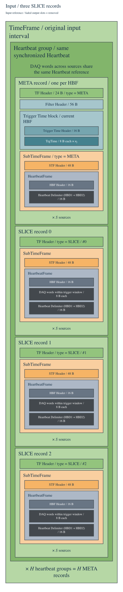
選別例：SLICE #1を除去

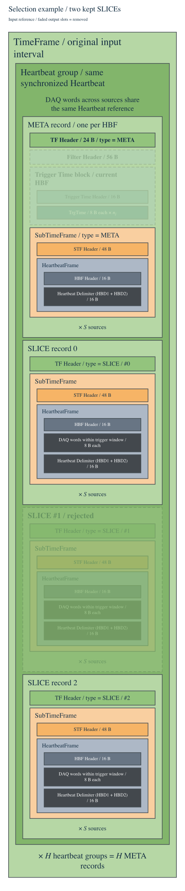
1.8 FileSink
入力順にTF列を書き、ファイル先頭と末尾へ304 byteのFileSink Header/Trailerを付ける。図は非圧縮の論理byte列。
非圧縮の論理byte列は [FileSink Header] [META TF] [採用SLICE TF列] [次のMETA TF] … [FileSink Trailer]。入力の順序を保つ。multipartのpart境界を示す別のレコードはこの書き込み経路では付けず、連結して書く（WriteMultipartData）。読出しは各ヘッダのmagicとlengthなどで構造をたどる。
FileSink Header/Trailerはtime_t=8 byteの環境で各304 byte。同じフィールド配置だがmagicが違い、HeaderのstopUnixtimeは0、Trailerには終了時刻が入る（Headerの設定、Trailerの設定）。圧縮やファイル分割を有効にした場合は、保存ファイルの物理構造をその設定と併せて読む。
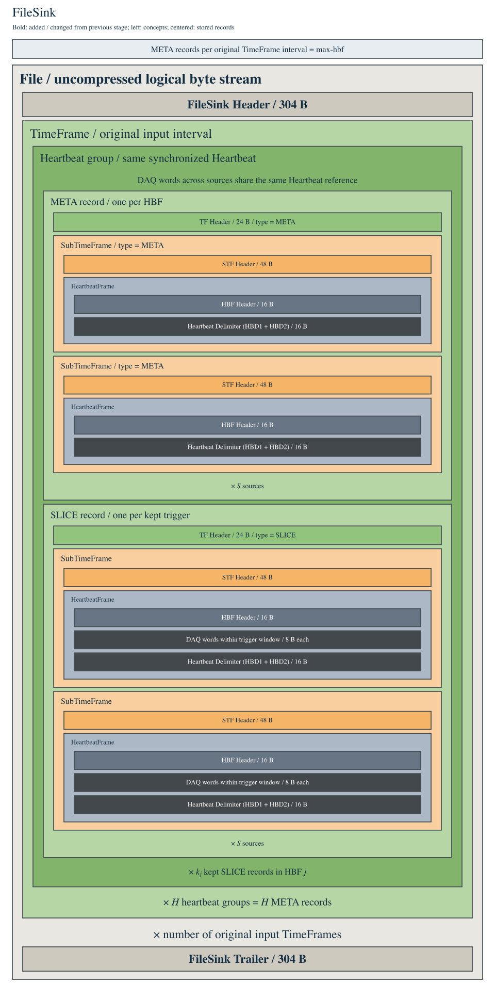
2. ヘッダ・レコード定義とmagic
magicはuint64_tの定数値と、little-endianでメモリ／ファイルに並べた8 byteの文字表現を示す。\0は実byte 0x00。コードコメントの末尾空白と、実定数のNULは区別する。ASCII表現はC文字列として途中で打ち切らず8 byteで読む。
| 構造体 | size [B] | magic [hex] | 8 byteの文字表現（LE） | 実byte [hex] |
|---|---|---|---|---|
| TimeFrame::v1::Header | 24 | 0x004d5246454d4954 | "TIMEFRM\0" | 54 49 4d 45 46 52 4d 00 |
| SubTimeFrame::v1::Header | 48 | 0x00454d4954425553 | "SUBTIME\0" | 53 55 42 54 49 4d 45 00 |
| HeartbeatFrame::Header | 16 | 0x0054414542545248 | "HRTBEAT\0" | 48 52 54 42 45 41 54 00 |
| Filter::v1::Header | 56 | 0x0049474f4c544c46 | "FLTLOGI\0" | 46 4c 54 4c 4f 47 49 00 |
| Filter::v1::TrgTimeHeader | 16 | 0x00454d4954475254 | "TRGTIME\0" | 54 52 47 54 49 4d 45 00 |
| FileSinkHeader::v1::Header | 304 | 0x004b4e53454c4946 | "FILESNK\0" | 46 49 4c 45 53 4e 4b 00 |
| FileSinkTrailer::v1::Trailer | 304 | 0x004c5254454c4946 | "FILETRL\0" | 46 49 4c 45 54 52 4c 00 |
| Filter::v1::TrgTime | 8 | なし | なし | — |
この環境のclang++で全構造体のsizeofと全フィールドのoffsetofを検査済み（64項目）。検証記録。別のABIや旧版ファイルの配置まで保証するものではない。byte図はアドレス順、bit図はMSB→LSBで読む。
TimeFrame::v1::Header / 24 byte
根拠：TimeFrameHeader.h（v1を参照）。
- META=0x0001、SLICE=0x0002。typeの上位8 bitはframework用、下位8 bitは実験用。
- frameworkフラグ：INCOMPLETE=0x8000、TIMEOUT=0x4000、DEPTH_LIMIT=0x2000。TF_COMPLETE=0。
| offset [B] | size [B] | field / type | 内容 |
|---|---|---|---|
| 0 | 8 | magicuint64_t | |
| 8 | 4 | lengthuint32_t | 自分のヘッダを含むフレーム長 [byte] |
| 12 | 2 | hLengthuint16_t | ヘッダ長 [byte] |
| 14 | 2 | typeuint16_t | |
| 16 | 4 | timeFrameIduint32_t | 集約するSTFと対応するID |
| 20 | 4 | numSourceuint32_t | TFに含めるソース数 |
byte配置図を開く（SVG）
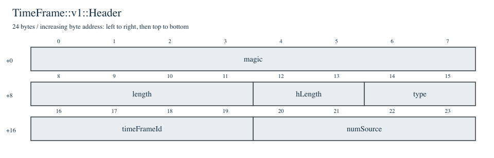
SubTimeFrame::v1::Header / 48 byte
根拠：SubTimeFrameHeader.h（v1を参照）。
- META=1。STFBuilderはtypeにthrottling状態を設定する。段階に応じた意味を読むこと。
- femType：NULDEV=0、TDC64L_V1=1、TDC64H/V1=2、TDC64L/V2=3、TDC64H_V3=5、TDC64L_V3=6、INPUT_REG=21、FLT_TDC=0x1000。
- SlicerのSLICEではnumMessages=2が書かれる。常にHBF数と同一とみなすことはできない。
| offset [B] | size [B] | field / type | 内容 |
|---|---|---|---|
| 0 | 8 | magicuint64_t | |
| 8 | 4 | lengthuint32_t | 自分のヘッダを含むフレーム長 [byte] |
| 12 | 2 | hLengthuint16_t | ヘッダ長 [byte] |
| 14 | 2 | typeuint16_t | |
| 16 | 4 | timeFrameIduint32_t | STFBuilderの設定によりHBD由来IDまたは連番 |
| 20 | 4 | femTypeuint32_t | FEM種別・データ世代の識別 |
| 24 | 4 | femIduint32_t | FEM識別子 |
| 28 | 4 | numMessagesuint32_t | STFBuilderではSTFヘッダを除くpayloadメッセージ数 |
| 32 | 8 | timeSecuint64_t | STFBuilderではgettimeofday().tv_sec |
| 40 | 8 | timeUSecuint64_t | STFBuilderではgettimeofday().tv_usec：秒内のµs |
byte配置図を開く（SVG）
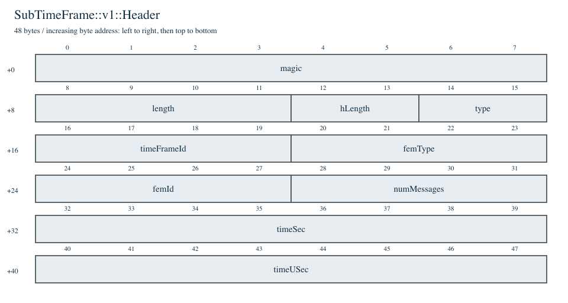
HeartbeatFrame::Header / 16 byte
- STFBuilder内の別定義HBFHeaderも同じ先頭16 byte配置。offset 14はreserveという名前で0に初期化される。
- HBFと末尾のHeartbeat Delimiter（HBD）は別物。HBF Headerはソフトウェア側、HBDはFEEデータ中の区切り。
| offset [B] | size [B] | field / type | 内容 |
|---|---|---|---|
| 0 | 8 | magicuint64_t | |
| 8 | 4 | lengthuint32_t | 自分のヘッダを含むフレーム長 [byte] |
| 12 | 2 | hLengthuint16_t | ヘッダ長 [byte] |
| 14 | 2 | typeuint16_t |
byte配置図を開く（SVG）
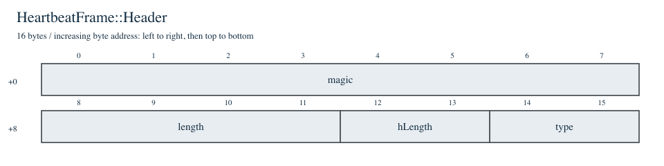
Filter::v1::Header / 56 byte
根拠：FilterHeader.h（v1を参照）。
- LogicFilter出力では単一のFilter HeaderとHBF別Trigger Timeブロックが続く。
- AddFilterMessageのlength計算はTrgTimeを4 byteとして数えているが、実際の出力は8 byte。資料では宣言値・実際のbyte数を区別する。
| offset [B] | size [B] | field / type | 内容 |
|---|---|---|---|
| 0 | 8 | magicuint64_t | |
| 8 | 4 | lengthuint32_t | 自分のヘッダを含むフレーム長 [byte] |
| 12 | 2 | hLengthuint16_t | ヘッダ長 [byte] |
| 14 | 2 | typeuint16_t | |
| 16 | 4 | timeFrameIduint32_t | |
| 20 | 4 | numTrigsuint32_t | LogicFilterでは全HBFのtrigger数の合計 |
| 24 | 4 | workerIduint32_t | |
| 28 | 4 | numMessagesuint32_t | LogicFilterでは1 + Trigger Timeブロック数 |
| 32 | 4 | elapseTimeuint32_t | LogicFilterの処理経過時間 [µs] |
| 36 | 4 | reserveuint32_t | 初期値0xff00ff00 |
| 40 | 8 | timeSecuint64_t | LogicFilterではepochからの秒 |
| 48 | 8 | timeUSecuint64_t | LogicFilterではepochからの総µs。STFのtimeUSecとは意味が異なる |
byte配置図を開く（SVG）
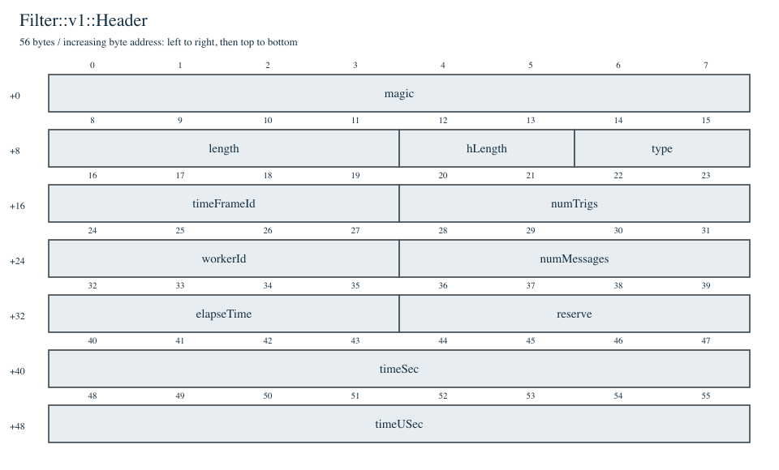
Filter::v1::TrgTimeHeader / 16 byte
根拠：FilterHeader.h（v1を参照）。
- 直後にTrgTimeがN個続く。length=16+8N。Trigger数が0でも16 byteのHeaderはあり得る。
| offset [B] | size [B] | field / type | 内容 |
|---|---|---|---|
| 0 | 8 | magicuint64_t | |
| 8 | 4 | lengthuint32_t | 自分のヘッダを含むフレーム長 [byte] |
| 12 | 2 | hLengthuint16_t | ヘッダ長 [byte] |
| 14 | 2 | typeuint16_t |
byte配置図を開く（SVG）
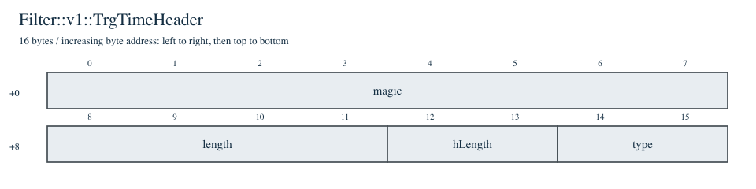
FileSinkHeader::v1::Header / 304 byte
根拠：FileSinkHeader.h（v1を参照）。
- offset 8〜15はuint64_t sizeとのunion。length / hLength / typeとしても参照する。
- HeaderとTrailerのレイアウトは同じだが、magicとstopUnixtimeなどの値は異なる。304 byteはtime_tが8 byteの環境。
| offset [B] | size [B] | field / type | 内容 |
|---|---|---|---|
| 0 | 8 | magicuint64_t | |
| 8 | 4 | lengthuint32_t | 自分のヘッダを含むフレーム長 [byte] |
| 12 | 2 | hLengthuint16_t | ヘッダ長 [byte] |
| 14 | 2 | typeuint16_t | |
| 16 | 8 | fairMQDeviceTypeuint64_t | FileSinkのHeaderで99に設定 |
| 24 | 8 | runNumberuint64_t | |
| 32 | 8 | startUnixtimetime_t | run開始時刻。ここではtime_t=8を仮定 |
| 40 | 8 | stopUnixtimetime_t | Headerでは0、Trailerでは終了時刻 |
| 48 | 256 | commentschar[256] | runコメント |
byte配置図を開く（SVG）
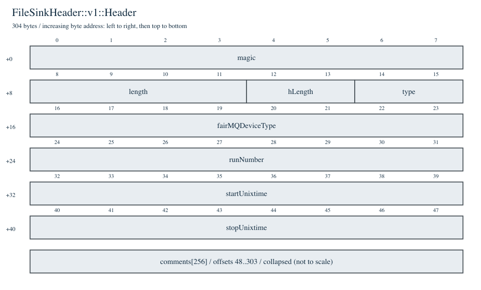
FileSinkTrailer::v1::Trailer / 304 byte
根拠：FileSinkTrailer.h（v1を参照）。
- offset 8〜15はuint64_t sizeとのunion。length / hLength / typeとしても参照する。
- HeaderとTrailerのレイアウトは同じだが、magicとstopUnixtimeなどの値は異なる。304 byteはtime_tが8 byteの環境。
| offset [B] | size [B] | field / type | 内容 |
|---|---|---|---|
| 0 | 8 | magicuint64_t | |
| 8 | 4 | lengthuint32_t | 自分のヘッダを含むフレーム長 [byte] |
| 12 | 2 | hLengthuint16_t | ヘッダ長 [byte] |
| 14 | 2 | typeuint16_t | |
| 16 | 8 | fairMQDeviceTypeuint64_t | FileSinkのHeaderで99に設定 |
| 24 | 8 | runNumberuint64_t | |
| 32 | 8 | startUnixtimetime_t | run開始時刻。ここではtime_t=8を仮定 |
| 40 | 8 | stopUnixtimetime_t | Headerでは0、Trailerでは終了時刻 |
| 48 | 256 | commentschar[256] | runコメント |
byte配置図を開く（SVG）
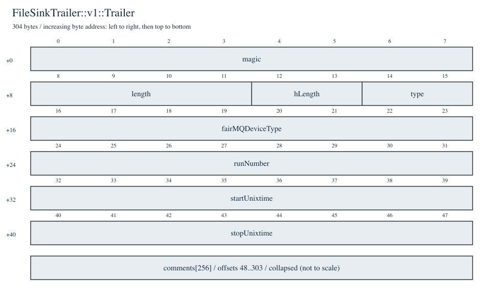
Filter::v1::TrgTime / 8 byte
根拠：FilterHeader.h（v1を参照）。
- magicは持たない。各レコードは8 byte。timeの比較単位は4 ns系（tdc4n）。
| offset [B] | size [B] | field / type | 内容 |
|---|---|---|---|
| 0 | 4 | timeuint32_t | trigger時刻。Slicerはtdc4nと比較する |
| 4 | 4 | typeuint32_t | LogicFilterは0xaa000000を出力。little-endian末尾byteは0xaa |
byte配置図を開く（SVG）
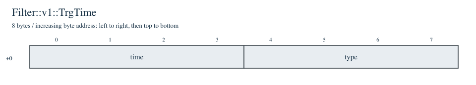
3. DAQ wordとHeartbeat Delimiter
ここではSlicerが処理するTDC64H_V3 / TDC64L_V3を対象にする。hitは64 bit＝8 byte。hitのtypeは0x0b（[63:58]）。HBDは2 word＝16 byteで、ソフトウェアのHBF Header 16 byteとは別に存在する。bit抽出の根拠：UnpackTdc.h:296、UnpackTdc.h:383。HBD宣言：AmQStrTdcData.h:111（v1）。
TDC64H_V3 / hit
UnpackTdc.h: tdc4n = TDC >> 12。femType=5。
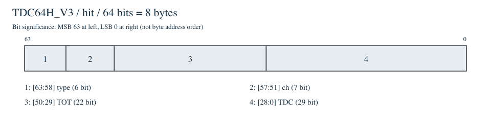
| bit範囲 | 幅 | field |
|---|---|---|
| [63:58] | 6 | type |
| [57:51] | 7 | ch |
| [50:29] | 22 | TOT |
| [28:0] | 29 | TDC |
TDC64L_V3 / hit
UnpackTdc.h: tdc4n = TDC >> 2。femType=6。
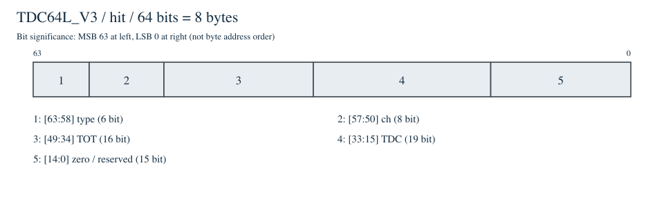
| bit範囲 | 幅 | field |
|---|---|---|
| [63:58] | 6 | type |
| [57:50] | 8 | ch |
| [49:34] | 16 | TOT |
| [33:15] | 19 | TDC |
| [14:0] | 15 | zero / reserved |
Heartbeat Delimiter / 1st word
AmQStrTdcData.h v1。UnpackTdc.h V3はflag、toffset、hartbeatを抽出する。
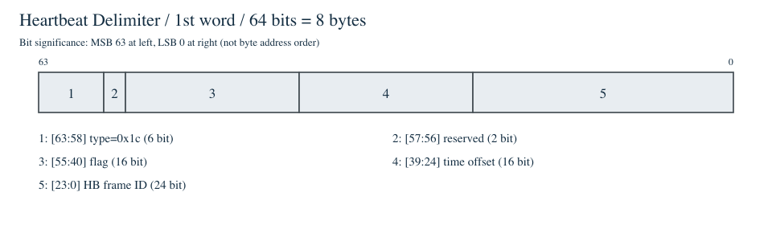
| bit範囲 | 幅 | field |
|---|---|---|
| [63:58] | 6 | type=0x1c |
| [57:56] | 2 | reserved |
| [55:40] | 16 | flag |
| [39:24] | 16 | time offset |
| [23:0] | 24 | HB frame ID |
Heartbeat Delimiter / 2nd word
AmQStrTdcData.h v1のフィールド名。V3 unpack側は[55:40]をflagとして読み出す。
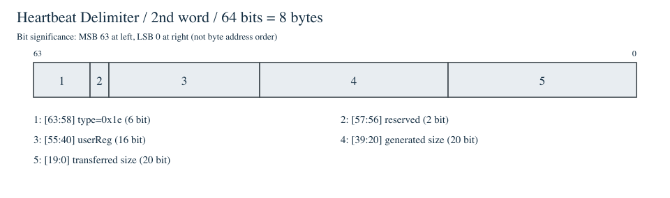
| bit範囲 | 幅 | field |
|---|---|---|
| [63:58] | 6 | type=0x1e |
| [57:56] | 2 | reserved |
| [55:40] | 16 | userReg |
| [39:20] | 20 | generated size |
| [19:0] | 20 | transferred size |
4. サイズと個数の関係
以下はV3のHBDが2 wordで、通常のデータソースだけが存在し、ソースごとにH個のHBFが揃う代表例。Ds,jをDAQ word数、njをHBF jのtrigger数とする。制御word、既存METAソース、追加情報がある場合はその分を数える。
| 対象 | 非圧縮の実byte数 | 意味 |
|---|---|---|
| FEEのheartbeat区間 | 8Ds,j + 16 | DAQ words + HBD1/HBD2 |
| HBF | 16 + 8Ds,j + 16 | HBF Headerを追加 |
| STF | 48 + Σj HBFs,j | 単一ソースのHBF列 |
| TFBuilder出力TF | 24 + Σs STFs | 複数ソースを集約 |
| LogicFilter追加部分 | 56 + Σj(16 + 8nj) | suppressionなしの場合の増分。実装のFilter.length値とは差がある |
| SlicerのMETA TFj | 24 + 56 + 16 + 8nj + 80S | 80＝STF Header 48 + HBF Header 16 + HBD 16 |
| SlicerのSLICE TF | 24 + 80S + 8ΣsDwindows | 窓内hitとHBDを残す |
| 後段FilterのMETA TF | 24 + 80S | Filter/Trigger情報を除去 |
| FileSink出力 | 304 + Σ(保存するTFの実長) + 304 | 非圧縮・通常終了時の論理構成 |
Slicerは不要な時間領域を除く一方、TF/STF/HBFのHeaderを複製し、重なる窓のhitも複製し得る。そのため、切り出し後の総データ量が必ず小さくなるとは限らない。trigger密度・窓幅・ソース数によって決まる。
5. 実装を読む際の注記
構造の意図と、今のソースが書くフィールド値を分けて整理する。以下はソース上の観察であり、実データでの発現確認や修正は今回行っていない。
| 項目 | コードで確認したこと | 資料・解析への影響 |
|---|---|---|
| Filter.length | AddFilterMessageはlength計算でtriggerをsizeof(uint32_t)＝4 Bとして数える。一方、出力とTrgTimeHeader.lengthは8 B/trigger。該当箇所 | 非suppression時のFilter.length初期値は実長より4Σnj B短くなる。TF全長は出力partサイズから再計算。SlicerのMETA生成ではFilter.lengthも再計算される。 |
| numMessages | STFBuilderはSTF Headerを除くpart数。LogicFilterのFilter Headerは自分を含むpart数。SlicerのSLICE STFは2に設定。META生成ではコピー元の値が残る。STFBuilder / Slicer | 一律に「HBF数」と訳さず、生成したデバイスごとの意味を併記する。特にシリアライズ後のレコード数とは区別する。 |
| timeUSec | STFBuilderはgettimeofdayのtv_usec、LogicFilterはepochからの総µs。STF / Filter | 同名でも意味が違う。Filterの時刻をtimeSec + timeUSec/10⁶として加算すると二重計上になる。 |
| Header内type | TFにframework状態フラグがある一方、Slicerと共通FilterはMETAと直接等値比較し、SlicerはMETA/SLICEで上書きする。 | 資料のMETA/SLICE図は通常のtype値を対象にする。上位状態bitを含む入力の伝播は別途確認する。 |
| SLICEのHBF length更新 | Slicerのhbfhidx位置をSubTimeFrame::Header*へcastしてlengthを書いている。該当箇所 | 現在は両Headerのlengthがoffset 8なので同じ場所を更新する。HBFの構造がSTFと同じという意味ではない。 |
| 再出力時のlength | 共通Filterが明示的に再計算するのはTF.length。STF/HBF Headerはコピーする。TF全長更新 | 派生ProcessSliceでHBFデータ数等を変更する場合は、下位Headerのlength更新責任も確認する。 |
| FileSink Header/Trailer | time_tを含む。HeaderとTrailerは同じフィールド構成だが値は異なる。 | 304 Bはこの環境では検証済み。ファイルの移植性を考えると固定幅のwire型とABI依存の宣言を区別する。 |
図はNoto Serifで描画し、SVGは表示用の文字輪郭データを含みます。フォントライセンス / 参照実装のライセンス